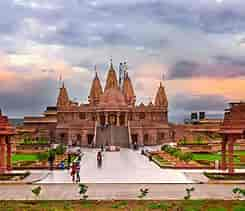

Pune is the second-largest city in the state of Maharashtra after Mumbai, and is an important city in terms of its economic and industrial growth.
Once the centre of power for the Maratha Empire, Pune’s rich historical past has made it the cultural capital of Maharashtra. Home to many colleges and universities, Pune is considered a prestigious educational destination, winning itself the title of “The Oxford of the East”. Pune has emerged as a new startup hub in recent years with information technology (IT), engineering and automotive companies sprouting. The city is also known for cultural activities such as classical music, theatre, sports and literature. According to the Ease of Living Index 2020, Pune was ranked as the second-best city to live in India.
Pune is among the 109 cities shortlisted in India’s Smart Cities Mission, and the city has allocated an estimated US$5.
2 billion for its smart city development plan. The city’s key priorities are to improve urban mobility, provide access to water, enhance citizen outreach efforts, and improve infrastructure in energy, housing, safety and security. The Smart Cities report card by India’s Urban Development Ministry ranked Pune the eighth-fastest city in implementing its Smart City plan.
BACK